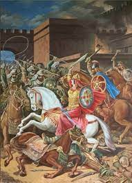

Կենսագրություն
Նախքան Արշակ Բ-ի հետ ամուսնանալը, Փառանձեմ Սյունին կնության էր տրվել վերջինիս եղբորորդուն՝ Գնել Արշակունուն։ Արշակ Բ-ի մյուս եղբոր՝ Արտաշեսի որդին՝ Տիրիթը սիրահարվել էր իր հորեղբորորդի Գնելի կնոջը, գեղեցկուհի Փառանձեմին։ Որպեսզի իրենով անի Փառանձեմին, գրգռում է Արշակ Բ-ին, որ իբր թե Գնելը ուզում է նրան սպանել և գահը հափշտակել։ Գնելը հրավիրվում է Շահապիվան, Նավասարդի տոներին մասնակցելու և այստեղ՝ 359 թվականի օգոստոսի 29-ին, Արշակ Բ-ի հրամանով դահճապետը սպանում է Գնելին։ Բայց հետո հայտնի է դառնում, որ անմեղ Գնելի մահվան պատճառը Տիրիթն է, և թագավորը հրամայում է սպանել նաև նրան[1]։ Ազատվելով իր վտանգավոր մրցակիցներից՝ թագավորն ամուսնանում է Գնելի այրի Փառանձեմի հետ՝ փորձելով սիրաշահել նրա հորը՝ Անդովկ Սյունուն։ Փառանձեմը հռչակվել է «Մեծ Հայքի թագուհի» և «տիկնանց տիկին»։ Շատ չանցած՝ ծնվել է թագաժառանգ Պապը։ Հայոց պատմիչ Փավստոս Բյուզանդի հաղորդմամբ՝ հետագայում, երբ Արշակը քաղաքական նկատառումով ամուսնացել է Բյուզանդիաից ուղարկված Ողիմպիայի հետ, վերջինիս դարձել է իր առաջին տիկինը։ Փառանձեմ թագուհին դրդել է արքունական պալատի երեց ոմն Մրջյունիկին թունավորել թագուհուն։ Որոշ ուսումնասիրողներ կասկածելի են համարում այս տեղեկությունը։
«Իսկ Փառանձեմը մեծ նախանձով ու ոխով լցված էր դեպի Ողոմպին և միջոց էր որոնում դեղերով նրան սպանելու. բայց չկարողացավ հնարք գտնել, որովհետև (Ողոմպին) շատ զգույշ էր իր անձին, նամանավանդ կերակուրների և ըմպելիքների մեջ։ Նա ուտում էր միայն իր նաժիշտների պատրաստած կերակուրը և խմում էր նրանց մեկնած գինին։ ...Անօրեն Փառանձեմը իրեն դավակից դարձրեց Մրջյունիկ անունով մեկին..., որ այն ժամանակ արքունական պալատի երեց էր։ ...Տերունական սուրբ և աստվածային մարմնի, այսինքն՝ հաղորդության հացի հետ խառնեցին մահվան դեղը, և Մրջյունիկ անունով երեցը եկեղեցում Ողոմպի տիկնոջը տվեց այն մահաբեր հաղորդությունը և սպանեց»[2]։

368 թվականին, Արշակ Բ-ի՝ Տիզբոն մեկնելուց և ձերբակալվելուց հետո, երբ Մեծ Հայքի վրա ծանրացել է պարսկական ներխուժման վտանգը, Փառանձեմ թագուհին իր ձեռքն է վերցրել երկրի կառավարումը։ Ռազմական օգնության և բյուզանդական արքունիքում պահվող որդուն՝ Պապին Հայոց թագավոր ճանաչելու խնդրանքով պատվիրակություն է ուղարկել Կոստանդնուպոլիս, իսկ ինքը 11 հազարանոց ընտիր զորքով ու արքունի գանձերով ապաստանել է Արտագերս ամրոցում։ Ըստ հույն պատմիչ Ամմիանուս Մարցելինուսի, Պապը նույնպես սկզբում Արտագերսում է եղել և հետո նրա պաշարումից հետո է հեռացել Բյուզանդիա։ Շապուհ Բ-ի մեծաքանակ պարսկական զորքերի դեմ 14-ամսյա հերոսական պաշտպանությունից հետո Փառանձեմը ստիպված է եղել անձնատուր լինել։ Գերեվարվել է Պարսկաստան, որտեղ անարգվել և սպանվել է Շապուհ Բ-ի հրամանով։ Փավստոս Բուզանդը հետևյալ կերպ է նկարագրում տեղի ունեցածը. «Երբ Փառանձեմ տիկնոջը բերին հասցրին Պարսից աշխարհ... և թագավորի առաջը հանեցին...Պարսից Շապուհ թագավորը կամեցավ նախատինք հասցնել (Արշակունյաց) տոհմին, Հայոց աշխարհին և թագավորությանը։ Հրամայեց կանչել իր բոլոր զորքերին... և այդ բազմության մեջ բերել Հայաստանի տիկնոջը՝ Փառանձեմին։ Եվ հրամայեց հրապարակում շինել ինչ-որ սարք, որի վրա գցել տվեց տիկնոջը և արձակել նրա վրա անասնական պիղծ խառնակության համար։ Այս կերպ սպանեցին տիկին Փառանձեմին»[3]։ Փառանձեմ թագուհին, որպես գեղեցիկ, հպարտ և հայրենասեր հայուհու կերպար, մարմնավորվել է գեղարվեստական գրականության մեջ (Րաֆֆու «Սամվել», Ս․ Զորյանի «Հայոց բերդը», Պ․ Զեյթունցյանի «Արշակ Երկրորդ» պատմավեպերը) և երաժշտության (Տ․ Չուխաճյանի «Արշակ Բ» օպերան) մեջ։